Качество ВУ
Методисты оценивают, насколько правильно и профессионально преподаватель проводит вводный урок.
Проверка работы и лояльности преподавателей через тайных покупателей
Шпионские вводные уроки (ШВУ) — это проверка работы и лояльности преподавателей, в качестве клиента выступает наш тайный покупатель. Тайные покупатели записываются на вводные уроки, а методисты потом отсматривают записи и оценивают, насколько правильно и хорошо преподаватель проводит ВУ.
Методисты оценивают, насколько правильно и профессионально преподаватель проводит вводный урок.
Проверяем, не предлагает ли преподаватель занятия в обход школы.
На ВУ студент намекает на частные занятия — так выявляем тех, кто уводит студентов.
Ответственный методист: Екатерина Валягина
Профили тайных покупателей есть в ЛК. Каждый «студент» — это наш сотрудник под другим именем:
Афанасьева Полина
наш сотрудникЛепешкина Мария
Сазонова Наталья
наш сотрудникГлущенко Надежда
Охрименко Артём
наш сотрудникАртём Коряков
Зверев Алексей
наш сотрудникСергей Шмат
Полякова Оксана
наш сотрудникАрина Осипова
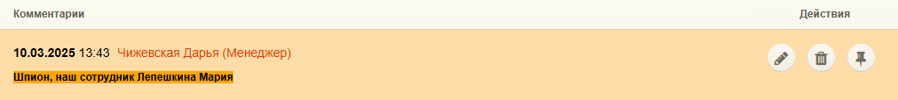
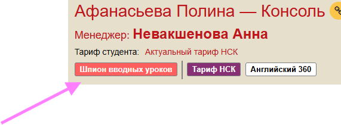
Имена тайных покупателей могут меняться — следите за новостями от методиста Кати Валягиной.
Нажмите на шаг, чтобы открыть инструкцию
Когда методист просит согласовать «шпионский ВУ» с определённым тайным покупателем, в его профиле нужно поставить статус «потенциальный» — это важно!
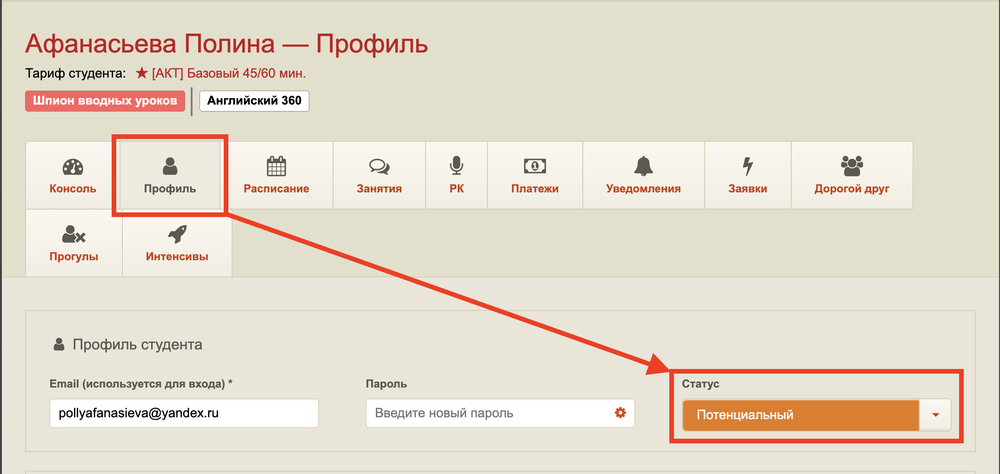
Обязательно создайте новую заявку и переведите в подбор — так задача не потеряется в процессе работы.
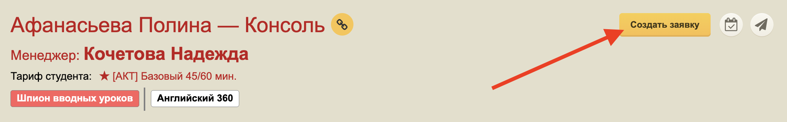
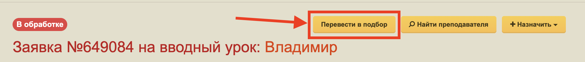
Найдите свободные слоты в расписании преподавателя, на которые он точно возьмёт, и на них предложите студента-тайного покупателя с курсом, который указала методист, и историей из профиля этого тайного покупателя, если указали.
Сначала пишем шпиону, кидаем часы из ЛК какие есть, выбираем часы, прикрепляем, и либо ставим через ПСП, либо напрямую от препода.
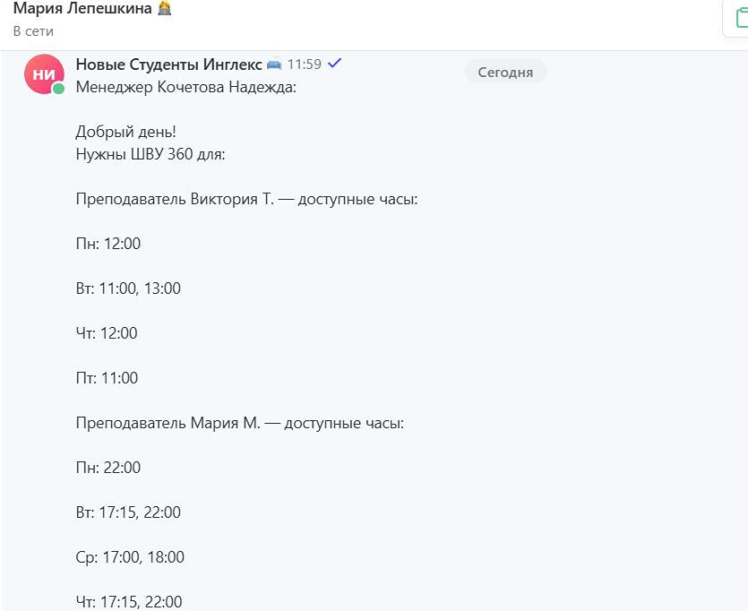
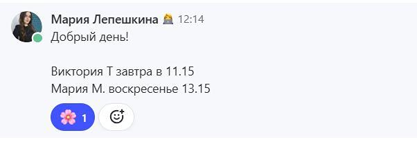
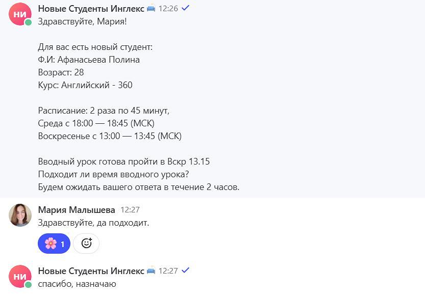
Подаём студента как реального — о том, что он тайный покупатель, преподавателю не сообщаем.
Когда преподаватель и студент-тайный покупатель подтвердят дату ВУ, назначьте ВУ в ЛК и напишите ответственному методисту.
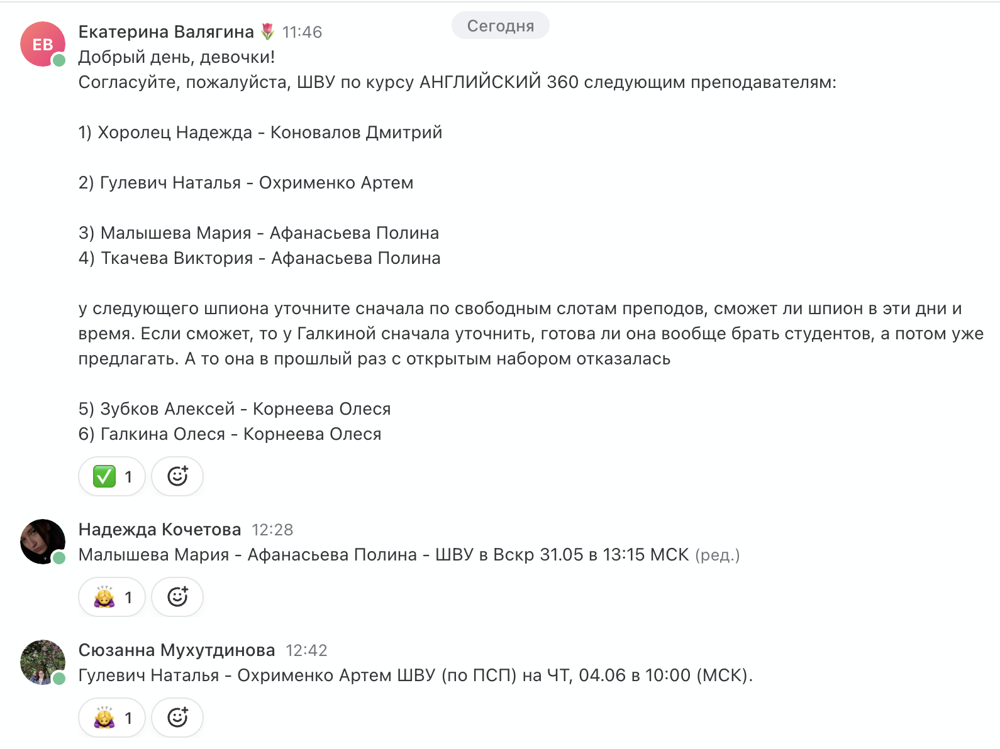
Подтвердите отчёт и поставьте напоминание через сутки: удалить расписание и написать преподавателю, что студент пока не готов приступить к обучению (причину не уточняли).
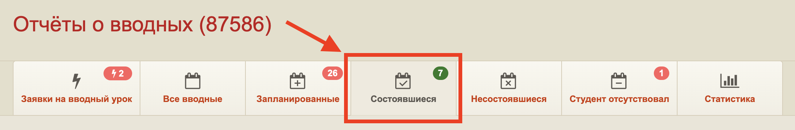
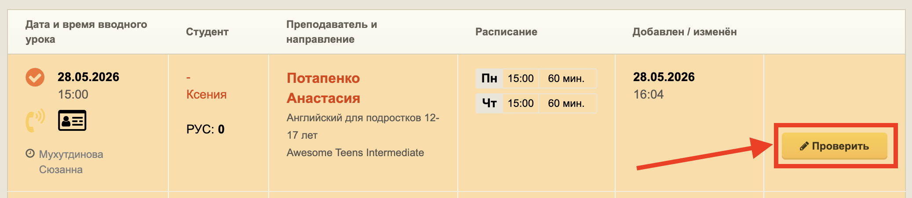
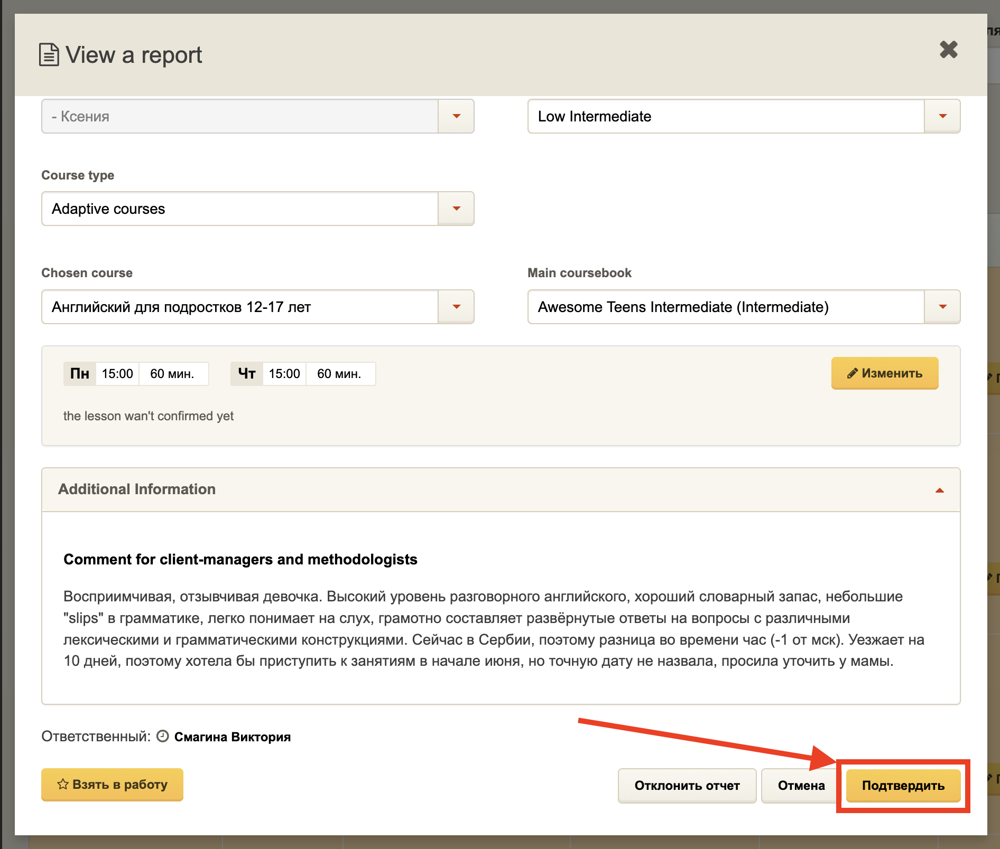
Не меняйте статус шпиона на «архивный» — всегда оставляйте «потенциальный», даже если больше расписаний нет.
Важно
Смена статуса шпионского ЛК на «архивный» технически влияет на показатель ILE преподавателей, даже при ШВУ.
Когда убираем в архив шпиона, показатель снижается, а когда снова достаём шпиона для очередного ШВУ — снова поднимается. Этот замкнутый круг заметили некоторые преподаватели.
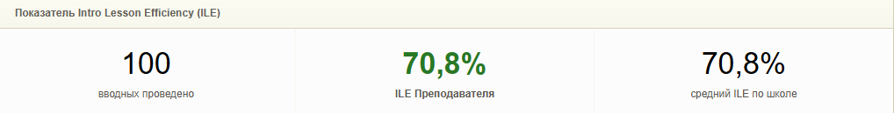
После ШВУ всегда оставляйте статус «потенциальный»